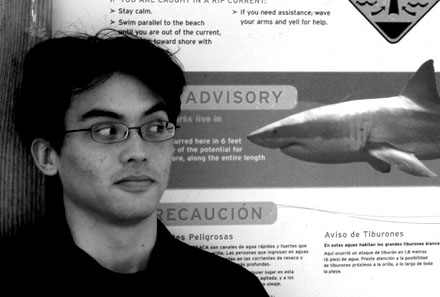

Albert Sweigart (mas pode chamá-lo de Al), é programador em São Francisco, Califórnia que adora andar de bicicleta, ler, ser voluntário, segurança de redes, frequentar lanchonetes, e criar programas úteis.
Ele nasceu em Houston, Texas. Ele finalmente colocou seu diploma de Ciência da Computação da Universidade do Texas em Austin num quadro. . É legal, um gato, e sinto que ele está perdendo algumas células cerebrais com o passar do tempo. Ele ri em voz alta quando vê os esquilos na praça, e as pessoas acham que ele é meio bobo.
Seu website e blog estão em http://coffeeghost.net